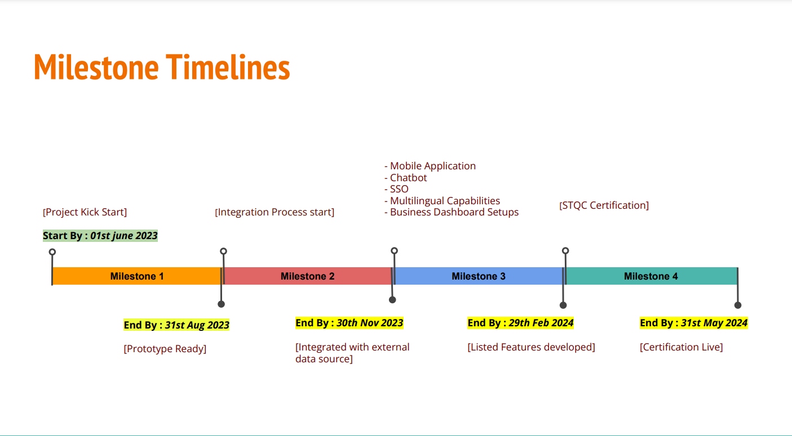
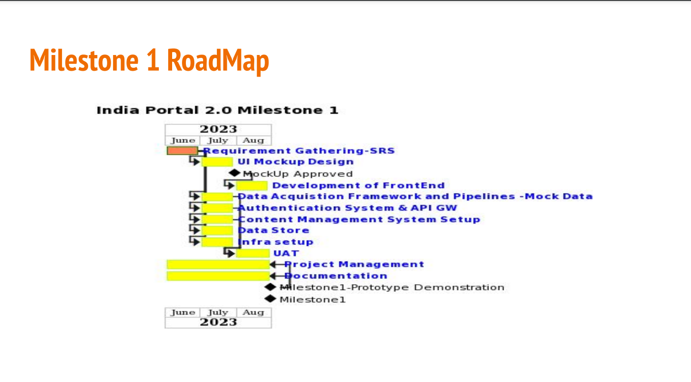
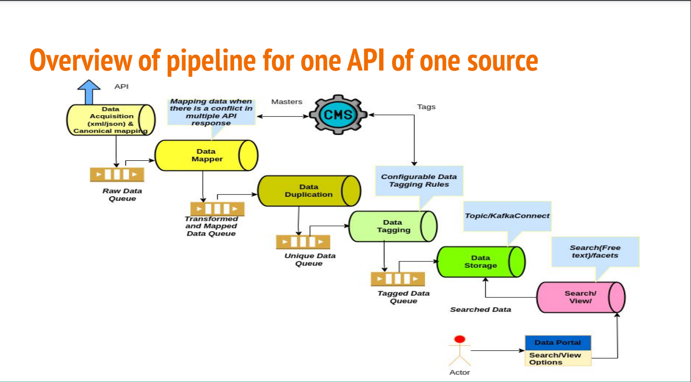
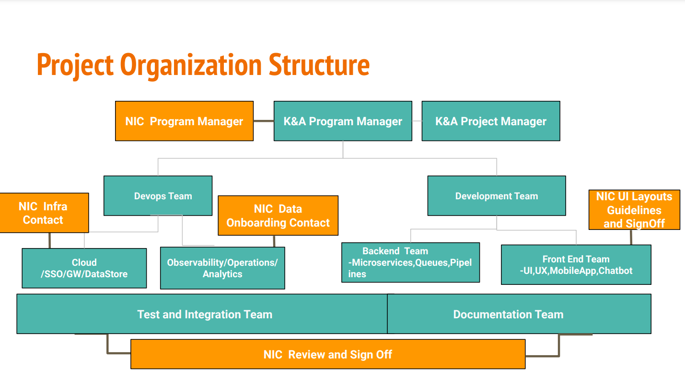

Project Review Meeting for june 2023 K&A team 5 july 2023


Requirement Analysis
Total Data Source : 23
Not available : 8
Available and Analysed : 15
| S.No. | Component | Sources | Remarks |
| 1 | services |
Various Digital services Delivery Portals/Applications(Umang,Service Pus,NGSP etc) |
through APIs |
| 2 | schemes |
Platforms like Haqdarshak, EasyGov,Schemopedia, Digital Empowerment Foundation,etc Portals/Applications(Umang,Service Pus,NGSP etc) |
One Platform would be selected for integration, through APIs |
| 3 | infographics | MyGov,DataGov,PIB | thorough APIs |
| 4 | news | PIB,DDNews,NewsonAir etc | through APIs and RSS Feeds |
| 5 | webcasts | webcast.gov.in | through APIs |
| 6 | state contact directory | S3Waas | State level contact directory will be created as and when the departments onboard,through APIs |
| 7 | acts and rules | indiacode.nic.in | through APIs |
| 8 | Visualization | DataGov | through APIs |
| S.No. | Component | Source | Mode | Search API | Reference website | K&A Remarks |
| 7 |
ecourts contact directory (judges) |
S3WaaS | through APIs | Make at NPI | https://ecourts.gov.in/ | Available and being analysed |
| 8 |
knowindia- tourist places |
S3WaaS | through APIs | Make at NPI | https://aliraipr.nic.in/en/tourist-places | Available and Analysed |
| 9 |
knowindia- accomodation |
S3WaaS | through APIs | Make at NPI |
https://agra.nic.in/acco modation/html/https://alir aipr.nic.in/en/where-t o-stay |
Available and Analysed |
| 10 |
knowindia- photo gallary |
S3WaaS | through APIs | Make at NPI |
https://agra.nic.in/acco modation/html/https://alir aipr.nic.in/en/where-t o-stay |
Available and Analysed |
| 11 |
knowindia- photo gallary |
S3WaaS | through APIs | Make at NPI |
https://agra.nic.in/acco modation/html/https://alir aipr.nic.in/en/where-t o-stay |
Available and Analysed |
| 12 |
knowindia- produce |
S3WaaS | through APIs | Make at NPI |
https://agra.nic.in/acco modation/html/https://alir aipr.nic.in/en/where-t o-stay |
Available and Analysed |
| 13 |
knowindia- helpline |
S3WaaS | through APIs | Make at NPI |
https://agra.nic.in/acco modation/html/https://alir aipr.nic.in/en/where-t o-stay |
Available and Analysed |
| 14 |
knowindia- public utilities |
S3WaaS | through APIs | Make at NPI |
https://agra.nic.in/acco modation/html/https://alir aipr.nic.in/en/where-t o-stay |
Available and Analysed |
| 15 | blogs |
MyGov, DataGov |
through APIs |
https://agra.nic.in/acco modation/html/https://alir aipr.nic.in/en/where-t o-stay |
Available and Analysed. Findings shared with Pankaj/Ravi |
First Ingest Master Data
Resolve conflicts between Masters
Link to ingested masters while ingested masters while ingesting transactional dta
Data Analysis
| # | S3WAAS API | Proposed facets of search | free text search | Nature | Remarks |
| 1. | state list | Master | Conflicts with IGOD state master | ||
| 2. | District list | stateName | Master | Conflicts with IGOD district master | |
| 3. | district who is who | StateName,districtName,category,designation | Name(Title) | Transactional | Duplication of content between who’who and Directory List |
| 4. | district contact directory | StateName,districtName,category,designation | Name(Title) | transactionalr | Duplication of content between who’who and Directory List |
| 5. | state category directory | Transactionalr | Not available | ||
| 6. | ecourts contact directory(judges) | Transactional | Under Analysis | ||
| 7. | ecourts contact directory(judges) | Transactional | Under Analysis | ||
| 8. | ecourts contact directory(judges) | Transactional | Under Analysis |
| # | S3WAAS API | Proposed facets of search | free text search | Nature | Remarks |
| 9. | state list | Master | Conflicts with IGOD state master | ||
| 10. | District list | stateName | Master | Conflicts with IGOD district master | |
| 11. | district who is who | StateName,districtName,category,designation | Name(Title) | Transactional | Duplication of content between who’who and Directory List |
| 12. | district contact directory | StateName,districtName,category,designation | Name(Title) | transactionalr | Duplication of content between who’who and Directory List |
| 13. | state category directory | Transactionalr | Not available |
Data Analysis
| # | IGOD API | Proposed facets of search | free text search | Nature | Remarks |
| 1. | state list | Master | Conflicts with IGOD state master | ||
| 2. | District list | stateName | Master | Conflicts with IGOD district master | |
| 3. | district who is who | StateName,districtName,category,designation | Name(Title) | Transactional | Duplication of content between who’who and Directory List |
| 4. | district contact directory | StateName,districtName,category,designation | Name(Title) | transactionalr | Duplication of content between who’who and Directory List |
| 5. | state category directory | Transactionalr | Not available | ||
| 6. | state category directory | Transactionalr | Not available | ||
| 7. | state category directory | Transactionalr | Not available | ||
| 8. | state category directory | Transactionalr | Not available |
| # | IGOD API | Proposed facets of search | free text search | Nature | Remarks |
| 1. | state list | Master | Conflicts with IGOD state master | ||
| 2. | District list | stateName | Master | Conflicts with IGOD district master |
Data Analysis
| # | API | Proposed facets of search | free text search | Nature | Remarks |
| 1. | state list | Master | Conflicts with IGOD state master | ||
| 2. | District list | stateName | Master | Conflicts with IGOD district master |
Upcoming
UI MockUps(Landing page)
CMS use case

Activities
| Item | Status | Remarks |
| Requirements Gathering | Ongoing | SRS/Data Analysis/Architecture |
| UI Mockups | Ongoing | Need to converge on UI landing page and navigation |
| Data Acquisition Framework and Pipeline | Ongoing | |
| Authentication System and API GW | Not Started | |
| CMS setup | Ongoing | |
| Infra Setup | Not Started | |
| Datastore setup | Not Started | |
| Prototype Demonstration | Ongoing | Would need a use case that stakeholders would like to see |
| Item | Status | Remarks |
| Project Management | Ongoing | |
| Documentation | Ongoing |
| Item | Status | Remarks |
| Requirements Gathering | Ongoing | SRS/Data Analysis/Architecture |
| UI Mockups | Ongoing | Need to converge on UI landing page and navigation |
| Data Acquisition Framework and Pipeline | Ongoing | |
| Authentication System and API GW | Not Started | |
| CMS setup | Ongoing | |
| Infra Setup | Not Started | |
| Datastore setup | Not Started | |
| Prototype Demonstration | Ongoing | Would need a use case that stakeholders would like to see |
| Role | K&A contact | NIC Contact |
| Program Manager | Nity Gupta | Lokesh Sir |
| Project Manager | Monika Verma | Lokesh sir/Pankaj |
| Development Lead | Varad Gupta | |
| FrontEnd Team | Deepak Negi/Farhan | |
| Backend Team | Adarsh Verma/Barsha/Jai | Pankaj/Mansi/Rakesh/Sandeep |
| DevOps Team | Neeraj Yadav/Paul | |
| CMS Lead | Manoj Mahanta | |
| Document Lead | Monika Verma | |
| Tested Lead | Kapil Jain |
